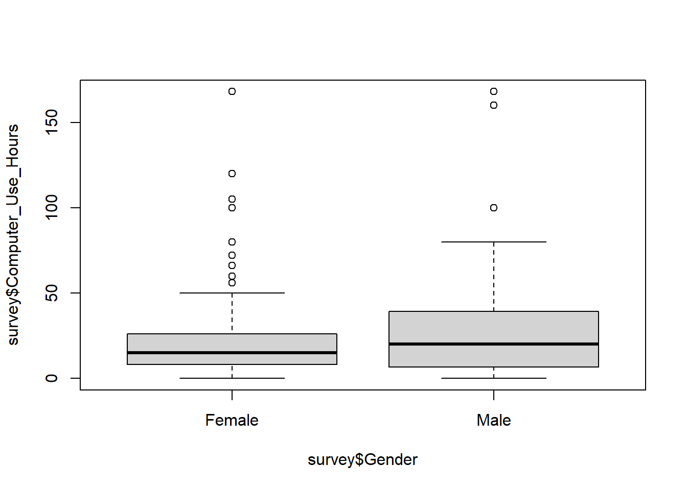

# Load libraries and data
library(rio)
library(mosaic)
library(tidyverse)
library(car)
survey <- import('https://github.com/byuistats/Math221D_Cannon/raw/master/Data/HighSchoolSeniors_subset.csv') %>% tibble()
head(survey)# A tibble: 6 × 60
Country Region DataYear ClassGrade Gender Ageyears Handed Height_cm
<chr> <chr> <int> <int> <chr> <dbl> <chr> <dbl>
1 USA FL 2022 12 Male 18 Left-Handed 182
2 USA IN 2022 12 Male 17 Right-Handed 190
3 USA GA 2022 12 Female 17 Right-Handed 172
4 USA NC 2022 11 Female 15 Right-Handed 163
5 USA CO 2022 12 Female 17 Left-Handed 51
6 USA MO 2022 11 Male 17 Right-Handed 181
# ℹ 52 more variables: Footlength_cm <dbl>, Armspan_cm <dbl>,
# Languages_spoken <dbl>, Travel_to_School <chr>,
# Travel_time_to_School <int>, Reaction_time <dbl>,
# Score_in_memory_game <dbl>, Favourite_physical_activity <chr>,
# Imprtance_reducing_pllutin <int>, Imprtance_recycling_rubbish <int>,
# Imprtance_cnserving_water <int>, Imprtance_saving_energy <int>,
# Imprtance_wning_cmputer <int>, Imprtance_Internet_access <int>, …glimpse(survey)Rows: 312
Columns: 60
$ Country <chr> "USA", "USA", "USA", "USA", "USA", "U…
$ Region <chr> "FL", "IN", "GA", "NC", "CO", "MO", "…
$ DataYear <int> 2022, 2022, 2022, 2022, 2022, 2022, 2…
$ ClassGrade <int> 12, 12, 12, 11, 12, 11, 11, 11, 11, 1…
$ Gender <chr> "Male", "Male", "Female", "Female", "…
$ Ageyears <dbl> 18, 17, 17, 15, 17, 17, 17, 18, 16, 1…
$ Handed <chr> "Left-Handed", "Right-Handed", "Right…
$ Height_cm <dbl> 182.00, 190.00, 172.00, 163.00, 51.00…
$ Footlength_cm <dbl> 20.0, 28.0, 26.0, 23.0, 31.0, 28.0, 2…
$ Armspan_cm <dbl> 142.00, 192.00, 167.00, 160.00, 52.00…
$ Languages_spoken <dbl> 1, 1, 1, 2, 1, 1, 1, 2, 1, 1, 1, 2, 1…
$ Travel_to_School <chr> "Car", "Car", "Car", "Car", "Car", "C…
$ Travel_time_to_School <int> 25, 20, 5, 6, 15, 17, 15, 40, 20, 3, …
$ Reaction_time <dbl> 0.349, 0.358, 0.447, 0.438, 0.542, 0.…
$ Score_in_memory_game <dbl> 34, 49, 46, 43, 61, 49, 40, 49, 44, 4…
$ Favourite_physical_activity <chr> "Baseball/Softball", "Swimming", "Lac…
$ Imprtance_reducing_pllutin <int> 650, 100, 610, 668, 1000, 199, 80, 70…
$ Imprtance_recycling_rubbish <int> 400, 100, 519, 775, 1000, 133, 80, 50…
$ Imprtance_cnserving_water <int> 550, 100, 422, 749, 1000, 179, 80, 10…
$ Imprtance_saving_energy <int> 400, 100, 599, 797, 1000, 273, 90, 50…
$ Imprtance_wning_cmputer <int> 500, 500, 797, 706, 20, 827, 90, 400,…
$ Imprtance_Internet_access <int> 850, 500, 1000, 749, 123, 951, 100, 1…
$ Left_Footlength_cm <int> 20, 28, 28, 23, 31, 27, 23, 21, 27, 2…
$ Longer_foot <chr> "Same length", "Same length", "Left f…
$ Index_Fingerlength_mm <int> 64, 90, 70, 69, 103, 106, 69, 70, 10,…
$ Ring_Fingerlength_mm <int> 76, 85, 75, 77, 100, 111, 75, 74, 9, …
$ Longer_Finger_Lefthand <chr> "Ring finger", "Index finger", "Ring …
$ Birth_month <chr> "June", "January", "April", "May", "J…
$ Favorite_Season <chr> "Summer", "Winter", "Summer", "Spring…
$ Allergies <chr> "No", "No", "No", "No", "Yes", "No", …
$ Vegetarian <chr> "No", "No", "No", "No", "No", "No", "…
$ Favorite_Food <chr> "Meat", "Pizza/Pasta", "Breads/Sandwi…
$ Beverage <chr> "Water", "Soft drink (caffeinated)", …
$ Favorite_School_Subject <chr> "History", "Mathematics and statistic…
$ Sleep_Hours_Schoolnight <dbl> 6.5, 6.0, 7.0, 6.0, 6.0, 7.0, 4.0, 7.…
$ Sleep_Hours_Non_Schoolnight <dbl> 7, 8, 9, 7, 12, 9, 6, 9, 8, 9, 6, 11,…
$ Home_Occupants <dbl> 6, 5, 2, 5, 3, 6, 6, 7, 3, 4, 6, 3, 5…
$ Home_Internet_Access <chr> "Yes - broadband connection", "Yes - …
$ Communication_With_Friends <chr> "Text messaging", "Text messaging", "…
$ Text_Messages_Sent_Yesterday <int> 30, 20, 10, 450, 50, 36, 500, 75, 100…
$ Text_Messages_Received_Yesterday <int> 30, 20, 18, 420, 60, 31, 1000, 75, 10…
$ Hanging_Out_With_Friends_Hours <dbl> 10, 10, 72, 5, 24, 4, 2, 5, 10, 8, 5,…
$ Talking_On_Phone_Hours <dbl> 2, 0, 1, 15, 34, 1, 3, 3, 10, 2, 0, 1…
$ Doing_Homework_Hours <dbl> 12.0, 0.0, 0.0, 8.0, 30.0, 8.0, 10.0,…
$ Doing_Things_With_Family_Hours <int> 8, 5, 0, 8, 15, 13, 5, 10, 10, 6, 4, …
$ Outdoor_Activities_Hours <dbl> 8, 20, 10, 3, 15, 5, 5, 1, 2, 1, 1, 2…
$ Video_Games_Hours <dbl> 4.0, 10.0, 0.0, 2.0, 34.0, 13.0, 6.0,…
$ Social_Websites_Hours <dbl> 1, 3, 100, 10, 25, 30, 2, 8, 10, 30, …
$ Texting_Messaging_Hours <dbl> 2, 1, 50, 5, 20, 7, 2, 3, 9, 1, 24, 1…
$ Computer_Use_Hours <dbl> 3, 20, 5, 15, 40, 13, 2, 24, 9, 1, 24…
$ Watching_TV_Hours <dbl> 1, 20, 5, 4, 5, 41, 2, 2, 20, 6, 0, 2…
$ Paid_Work_Hours <dbl> 1, 0, 12, 0, 40, 20, 12, 1, 35, 14, 0…
$ Work_At_Home_Hours <dbl> 1, 1, 1, 5, 10, 7, 4, 0, 9, 0, 2, 0, …
$ Schoolwork_Pressure <chr> "Very little", "Some", "Some", "Some"…
$ Planned_Education_Level <chr> "Graduate degree", "Graduate degree",…
$ Favorite_Music <chr> "Pop", "Techno/Electronic", "Rap/Hip …
$ Superpower <chr> "Telepathy", "Invisibility", "Telepat…
$ Preferred_Status <chr> "Happy", "Rich", "Rich", "Healthy", "…
$ Role_Model_Type <chr> "Sports person", "Sports person", "Re…
$ Charity_Donation <chr> "Health", "Arts, culture, sports", "H…favstats(survey$Computer_Use_Hours ~ survey$Gender) survey$Gender min Q1 median Q3 max mean sd n missing
1 Female 0 8.00 15 25.500 168 22.81579 26.15705 152 0
2 Male 0 6.75 20 38.875 168 27.24687 29.39008 160 0boxplot(survey$Computer_Use_Hours ~ survey$Gender)
histogram(survey$Computer_Use_Hours ~ survey$Gender)Error in r[i1] - r[-length(r):-(length(r) - lag + 1L)]: non-numeric argument to binary operator